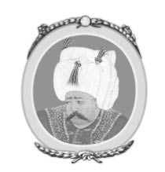
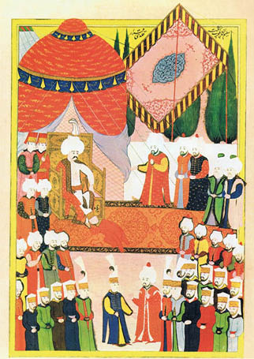
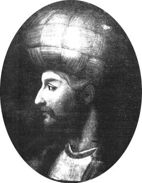
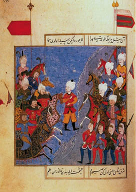
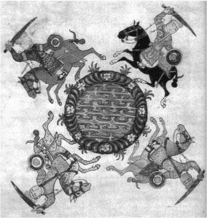

IX : I. SELİM
1512-1520

Bayezid’in, oğlunun zoruyla tahttan çekilmesi üzerine, Selim, Yeniçerilerin tam desteğiyle İstanbul’da padişah ilan edilmiştir. Yalnızca sekiz yıl boyunca hüküm sürmüş; fakat bu kısa süre içinde Osmanlı İmparatorluğu’nun sınırlarını iki katından da fazlasına çıkarmayı başarmıştır. Avrupa’dan toprak katamamış; fakat İran’dan önemli vilayetler olan Diyarbakır ve Kürdistan’ı, Mısır’ın Memluk hükümetinden Mısır ve Suriye ile kutsal şehirler de dahil olmak üzere Arabistan’ın büyük bir çoğunluğunu topraklarına katmıştır. Selim, savaş ve fetih gibi uğraşılara kırk yedi gibi oldukça geç bir yaşta başlamıştır. İmparatorluğunun sınırlarını genişletme hırsı hususunda babasıyla taban tabana zıt olan Selim yılmaz arzu ve gayretiyle bir hükümdar ve komutan olduğunu kanıtlamıştır. Selim çok iyi bir yöneticidir. Haremini veya hayattaki diğer zevkleri çok fazla önemsememiştir. Az uyumuş ve gecelerini edebi çalışmalara adamıştır. İlahiyatla ilgili münazaralardan ve alimler cemiyetinden zevk almış ve bu alimlere devletin üst mertebelerinde görevler vermiştir. Fakat bu kişilerin Selim’in kötülüklerini törpülemede bir etkileri olmamıştır. Selim, savaşta veya barışta insan hayatına değer vermemiştir. Suskunlar olarak bilinen adamları, Selim tarafından belirlenen herhangi bir kişiyi her an boğmaya veya kellesini vurmaya hazır insanlardır. Selim’in en güvenilir elçileri olan eski arkadaşları veya yardımcılarının hayatları her zaman tehlikedeydi. Onun planlarını kınayanları veya protesto edenleri ya da geçmiş davranışlarını eleştirenleri Selim çoğunlukla kendi elleriyle öldürmüştür. Kısa süren hükümdarlığı boyunca yedi sadrazamının kellesini vurdurmuştur. Sayısız başka devlet adamı ve komutan da sadrazamlarla aynı kaderi paylaşmıştır. Bu kişiler, yalnızca birkaç ay devlet işleriyle ilgilenmenin hazzını yaşayabilmiştir. Bu kaderi paylaşan kişilerden biri Selim’e oyunbaz bir hatırlatma yaparak özel hayatını düzene sokabilmek için kendi yazgısıyla ilgili önceden bilgilendirilme talebinde bulunmuştur. Padişah’ın cevabı: “Bazen seni öldürmeyi düşünüyorum; fakat şu an için senin mevkini doldurabilecek kimseyi bulamıyorum, yoksa seni seve seve mahkûm ederdim.” olmuştur. Yolsuzlukla suçlanan kadılar da aynı şekilde cezalandırılmıştır. Kasti bir hicivle, bu kadılar, cellada teslim edilmeden önce, kendi infazlarını vermeye zorlanmıştır. Ayrıca, daha fazla para istemeye cesaret eden Yeniçeriler de ölümle cezalandırılmıştır. Selim’in, kayıtlara geçen ilk eylemi, tahta çıkışı üzerine geleneksel olarak aldıkları hediyeleri talep etmek adına heyet kararıyla gönderilen bir Yeniçeri’yi kendi kılıcıyla öldürmesi olmuştur. Fakat bu olaylar, Selim’in hükümdarlığına gölge düşürmemiş ve yeni birer olay olmaktan çıkmıştır. Boşalan mevkiler için devlet işlerinin risklerini yürütme konusunda azimli ve istekli sayısız başvuru yapılmıştır. Selim, karşılıklı ilişkilerde uzlaşmacı olmuş, hayatını da mutlu bir şekilde sürdürmüştür. Büyük babası Fatih Sultan Mehmed gibi, acımasızlıklardan keyif almamıştır. Halkına duyduğu sorumluluk duygusuyla hareket etmiştir. Çok fazla kan döktüğü zaman ordudaki disiplini yenilemiş ve sürdürmüştür. Yolsuzluğun önüne geçmiştir. Tebaası tarafından sevilmiş; fakat birçok Doğu ülkesinde olduğu gibi, bu sevgi korkuyla aşılanmıştır.

I. Selim’in Cülüsü
Tahmin edileceği üzere, tahtta hak iddia eden ve Anadolu’da önemli vilayetlerin valileri olan Orhan ve Ahmed, Selim’e karşı silahlanmıştır. Gafil avlanan Orhan ivedilikle bozguna uğratılmıştır. İple boğulmadan önce Orhan’a bir saat müddet verilmiştir. Bu kısa süre içerisinde Orhan, kardeşinin zalimliklerini küçümseyen bir şiir yazmıştır. Selim, şiiri görünce ağlamış ve kardeşi için resmi bir cenaze töreni hazırlanmasını emretmiştir. Bursa’da korkunç bir kıyım yaşanmıştır. Selim’in tahtta hak iddia edebilecek olan yeğenleri buraya getirilmiştir. Yeğenlerin yaşları beşten yirmiye kadar değişmektedir. Hepsi Selim’in emri üzerine boğdurulmuş, Selim yan odadan olanları izleyip suskunlara görevlerini bir an önce bitirmelerini buyururken yaşça en büyük olanları büyük mücadelelerle karşı koymaya çalışmış, en küçük olanı ise iç sızlatan yakarışlarla merhamet dilemiştir. Bayezid’in gözdesi olan ortanca oğlu Ahmed savaş alanında daha büyük mücadeleler göstermiş; fakat birkaç ay sonra o da bozguna uğratılmış ve öldürülmüştür.
Tahtının güvenliğini garanti altına alan Selim, dikkatini İran ile olan savaşa vermiştir. Çatışmanın temel sebebi dinî bir tartışma üzerine çıkmıştır. Eski zamanlardan beri, Hz. Muhammed’in ümmeti Sünniler ve Şiiler olmak üzere iki mezhebe ayrılmıştır. Bu farklılığın kaynağı, salahiyetin, Şiilerin ileri sürdüğü üzere, tek bir halifesine mi atfedileceği, yoksa yalnızca Peygamberin sözlerinin mi inanç hususlarında kati kabul edilmesi gerektiğine dayanmaktadır.28 Bu iki mezhep arasındaki inanç farklılığı ne kadar az ise bu mezheplerin üyeleri birbirlerinden o kadar fazla nefret ediyormuş gibi görünmektedir; o kadarki Rum ve Latin Kiliselerinin Hıristiyanları, birbirlerinden Hz. Muhammed’in ümmetinden nefret ettiklerinden daha fazla nefret etmeleri gibi Sünni ve Şiiler de birbirlerini yok etme konusunda kararlı olacak kadar nefret etmiş; fakat bu fark dışarıdan ancak birbirlerine tıpatıp benzeyen şeylerin arasında olabilecek bir fark gibi görünmektedir.
28 Söz konusu bu iki mezhep arasındaki asıl ayrılık, Hz. Peygamber’den sonra O’nun yerine geçmesi gereken kişi hakkında oluşmuştur. Yoksa Sünniler ve Şiilerde de Hz. Peygamber’in sünneti başlıca kaynaklardan biridir. (çev.)
İran, Şiilerin ana merkezidir, Osmanlı İmparatorluğu’nda ise Sünniler yaygın olmuştur. Fakat daha sonraki yıllarda, Şiiler Anadolu’da rağbet kazanmaya başlamıştır. Hz. Muhammed’in mutaassıp bir savunucusu olan Selim, Şii aykırılığını imparatorluk sınırlarından tamamen söküp atmaya karar vermiştir. Zalimce bir gayretle, “kâfirleri” ortaya çıkarmak için bir casus ordusu kurmuş ve bir gün içinde yetmiş bin “kâfiri” tutuklatmıştır. Bunların kırk bini öldürülmüş, geri kalanları da hapis cezasına çarptırılmıştır. Bu acımasızlıklar, Selim’e karşı bir öfke duygusu uyandırmamıştır. Türkiye topraklarında Selim’e “Adil” unvanını kazandırmış ve günün diplomatları ile tarihçileri bu durumu övgü dolu şekilde kaleme almıştır. Selim’in tutumu, benimsenen yolun acımasızca uygulanması durumunda bile herhangi bir aykırılığı kökünden kazıma ihtimalinin olduğunun bir kanıtıdır. Osmanlı İmparatorluğu’ndaki Şii aykırılığı ilk ve son olarak bastırılmıştır. Fakat bu serüven, İranlılarla Osmanlılar arasında halihazırda mevcut olan husumeti artırmış ve iki devlet arasındaki savaş kaçınılmaz bir hale gelmiştir. İlk çatışma, İranlıların, Bursa’da öldürülen kuzenlerinin arasında bulunmayan ve Ahmed’in oğlu olan Murad’a sığınma hakkı tanımasıyla başlatılmıştır.
O tarihlerde İran, imparatorluğu tazeleyen ve pek çok komşu devletleri fethederek veya buyruğu altına alarak topraklarını genişleten, muktedir ve başarılı bir hükümdar olan Şah İsmail’in egemenliği altındadır. Bu iki hükümdar, Şah İsmail ve Selim, gayret ve kudret açısından birbirlerine çok benzerdir. İran ile yapılacak olan savaş dîvânda Selim tarafından mütalaaya sunulduğunda dîvânda meşum bir sessizlik olmuştur. Bu savaşla ilgili bariz bir korku duyulmuştur. Dîvânın girişinde muhafızlık yapan Yeniçeri, Selim’in huzurunda dizlerinin üstüne çökerek bu belirsizliği bozmuş ve savaşla ilgili coşkun desteğini sunmuştur. Bu olay, dîvânın karar sürecini hızlandırmış ve de Yeniçeri ivedilikle daha üst bir mevkiye atanmıştır.
1514 yılının Mart ayının başında, sultanın komutası altında, Boğaz’ın Asya yakasında yüz kırk bin asker ile üç bin adet silah toplanmıştır. Ordunun yükünü ve cephanesini taşımak üzere altı yüz adet deve alınmıştır. Ordu, sefere 20 Nisan günü başlamıştır. Ordunun ilk hedefi Tebriz’dir, daha sonra da Üsküdar’dan dosdoğru içinde hiç yol olmayan bin millik dağlık bir ülkeyi geçerek İran’ın başkentini almaktır. Seferin en büyük zorluğu, askerlere, atlara ve develere yiyecek sağlamak olmuştur. Yiyecek tedarikinin bir kısmı, Karadeniz’deki egemenliğin Selim’e İstanbul’dan yiyecek temin etme yolunu açtığı, Trabzon’dan sağlanmıştır.
Selim, seferini Şah İsmail’e yazdığı aşağılayıcı bir mektupla başlatmıştır. Bu mektupta Selim şunları kaleme almıştır:
Yalnızca hak dine uyan kişi bu dünyada zenginliğe, ahirette ise sonsuz hayata kavuşacaktır. Sen, Emir İsmail, böyle bir ödüle asla erişemeyeceksin; sen kurtuluş yoluna ve Allah’ın kutsal emirlerine sırtını çevirdin; sen İslam dininin berraklığını kirlettin; sen Allah’ın mihraplarını lekeledin; sen kara bulutların arasından doğup kendini hilelerle ihtişamlı ve görkemli bir yere yücelttin; sen Müslümanlara zorbalığın ve baskının kapısını açtın; sen kötülüğe, yalancılığa ve dine küfür etmeye, dinsizliğe, sapkınlığa ve parçalanmaya zorladın; sen, riyakârlık kisvesi altında, huzursuzluk ve fesatlık tohumları ektin; sen dinsizliği yaygınlaştırdın; sen, utanç verici tutkularına boyun eğdin ve en utanç verici taşkınlıklardan sakınmadan kendini bıraktın... Bu yüzden, bir Müslüman’ın ve her şeyden öte dindar bir hükümdarın ilk görevi Allah’ın emirlerine itaat etmektir, “Siz inananlar, Rabbinizin emirlerini yerine getirin.” Ulema ve kanun adamları, yalancı ve kâfir olan senin ölüm emrini vermiş ve her iyi Müslüman’ın dinin korunması, sen ve senin yolundan giden insanların sapkınlık ile dinsizliğini yok etmek gibi kutsal bir görev için silahlanmasını sağlamıştır.

Şah İsmail
Selim ve ordusunun İran sınırına dayanması üzerine Şah İsmail düşmanının üzerine gitmemiş bunun yerine tüm ülkeyi harabeye çevirerek başkente geri çekilmiştir. Bu durum, Selim’in ordusunun ihtiyaçlarını sağlamasını çok zorlaştırmıştır. Askerler uzun yürüyüşlerden bitap düşmüştür. Yeniçeriler isyan etmeye başlamıştır. Selim’in çocukluğundan beri birlikte büyüdüğü ve yönetimde Selim ile birlikte büyük bir etkisinin olduğu düşünülen komutanlarından biri olan Hemdar Paşa, İran’a yapılacak olan akının en ufak bir yemek kırıntısının bile kalmadığı bir ülke üzerinden sürdürülmesine karşı çıkma konusunda kardeşi tarafından ikna edilmiştir. Sultan, bu öneriyi paşanın başını vurdurarak karşılamıştır.
Selim yalnızca dizelerden oluşan başka bir aşağılayıcı mektup yazarak İsmail’i kendisiyle savaş alanında karşılaşmaya kışkırtmış ve onun korkaklığıyla alay etmiştir. Mektubunda, “Saltanatı yalanlarla ele geçiren bir kişi tehlikeden kaçmamalıdır... Egemenlik, kur yapan bir gelindir ve dudaklarında keskin kılıcın acı busesini taşır.” demiştir. İsmail, savaş için hiçbir neden olmadığını belirterek vakur bir şekilde bu mektuba cevap vermiş ve barış arzusunu dile getirmiştir. Selim’in mektubunun bir sultanın vakurluğuna uymayacak bir üslupla yazıldığını ve fazla miktarda afyon almış bir kâtibin elinden alelacele çıkmış bir mektup olduğunu belirtmiştir. Selim’in afyona olan düşkünlüğü bilindiğinden dolayı bu iğneleme sert olmuştur. Mektup, sözde kâtibe gönderilen bir kutu afyon eşliğinde gelmiştir.
Bu sırada, Selim ve ordusu ihtiyaçlarını karşılama konusunda gittikçe artan bir zorlukla ilerlemeye devam etmiştir. Nihayetinde, askerler açıkça isyan başlatmış ve evlerine dönme talebinde bulunmuşlardır. Selim, atını askerlerin arasına sürme cesaretini göstermiş ve direk olarak askerlerine hitap etmiştir.
Bu mudur Sultanınıza hizmetiniz? Sadakatiniz yalnızca övgü ve hayranlıktan mı ibarettir? Aranızdan gitmek isteyen kim varsa gidebilir. Ben bu yoldan geri dönemem. Korkaklar, kılıçları ve okları, ruhları ve bedenleriyle kendilerini bu yola adayanların arasından derhal çıksın.
Selim, birliklere ayrılıp yürüyüşe devam edilmesi emrini vermiş ve tek bir asker bile rütbesini bırakıp ayrılmaya cüret edememiştir.
Osmanlı ordusunun Tebriz’e varması üzerine İsmail sonunda saklandığı yerden çıkmış ve savaşmaya karar vermiştir. İki ordu, seferin başlangıcından 116 gün sonra yaklaşık 1200 millik bir yolculuktan sonra Ağustos ayının 14’ünde başkentten çok da uzak olmayan Çaldıran’da karşılaşmıştır. Türk ordusu bu savaşta muntazam bir performans sergilemiştir. Seksen bini süvari sınıfı olan ordudaki asker sayısı yüz yirmi bine düşmüştür. İran’ın ordusu ise atlı, silahlı ve iyi eğitimli seksen bin askerden oluşmaktadır. Fakat orduda ne piyade sınıfı vardır ne de ateşli silahlar. Türk askerleri ise uzun süren sefer sonucu bitap düşmüştür. Askerler yeterince yiyecek bulamamış, bitkin düşmüş ve atlarının da kondisyonu zayıflamıştır. Savaş, İranlı süvarilerin başarısı haline dönüşmüştür. İranlılar, Türk ordusuna her iki koldan şiddetle saldırmıştır. İsmail’in komutası altında olan birlik, Türk kanadını dağıtmayı başarmıştır. Diğer birlik ise başarılı olamamıştır. Osmanlılar geri çekilmiş, Yeniçeriler sağlam bir ön hat oluşturmuştur. Tüfek kuşanmış olan Yeniçeriler tarafından desteklenen top atışı yıkıcı bir yaylım ateşi başlatmıştır. İranlılar dağılmış ve yıkıma uğratılmıştır. Türk ordusunun diğer kolda uğradığı bozgun burada tersine çevrilmiştir. İranlı yirmi beş bin atlı asker savaş alanında öldürülmüştür. Şah İsmail de ciddi bir şekilde yaralanmış ve güçlükle kaçmayı başarmıştır.

Çaldıran Savaşı
Bu zaferden sonra Selim Tebriz’e girmiş ve orada sekiz gün kalmıştır. Maksadı kışı İran’da geçirmek ve bir sonraki baharda ordusunu canlandırmak iken askerleri buna karşı çıkmış ve eve dönme talebinde bulunmuşlardır. Bu sefer, Selim askerlerinin isteklerini reddedememiştir. İsmail’le barış antlaşması yapılmamış, Selim’in hayatı boyunca da bu iki ülke kağıt üzerinde savaş içinde olmaya devam etmiştir. Fakat Diyarbakır ve Kürdistan Türklerin elinde kalmıştır. Selim, ele geçirilen yerleri, bu iki vilayeti düzenlemiş ve çıkan herhangi bir isyanı bastırmış olan ünlü Türk tarihçisi İdris’e emanet etmiştir. İdris bu hususta son derece başarılı olmuş ve bu iki vilayet Osmanlı İmparatorluğu’nun topraklarına kalıcı olarak katılmıştır. Selim’in bütün bu mücadelesi takdire şayan bir başarı olarak ele alınmalıdır. Yüz kırk bin asker, seksen bin at ve üç yüz silah ile 1200 millik bir yolu katetmesi, güçlü bir orduyu bozguna uğratması, büyük bir şehrin kaynakları tarafından desteklenmesi Selim’i büyük komutanlar arasında iyi bir yere taşıyan bir başarıdır. Selim, İran’ı kendi topraklarına katma konusunda endişeli olmamıştır. Şii aykırılığına duyduğu nefret o kadar fazladır ki, İran’ı topraklarına katmaktan ziyade tecrit edilmesini istemiştir. İran’la olan ticareti yasaklayan bir ferman çıkarmış ve bu fermanı çiğneyerek İranlılarla kanunsuz ticari ilişkiler içine giren bir grup tüccar tespit edildiğinde bu kişilerin infazlarını emretmiştir. Şeyhülislam Cemali29, Selim’i bu emri hükümsüz kılmaya razı etme konusunda zorlanmıştır.
29 Zembilli Ali Cemali Efendi (?-1525). (çev.)
Şii aykırılığını bastırması ve “kâfir” İran’ın hakkından gelmesi üzerine galeyana gelen Selim, İstanbul’a döndüğünde Hıristiyanlığın kökünü topraklarından söküp atmaya karar vermiştir. Yine büyük zorluklarla, cesur şeyhülislam tarafından bu kararından caydırılmıştır. Fakat Selim, Hıristiyanları İstanbul’daki kiliselerinden mahrum etmek konusunda ısrarcı olmuş ve bu yüzden kiliseleri camiye çevirmiştir. 1516 baharında, Selim, Suriye ve Mısır fetihleriyle imparatorluğunun topraklarını genişletmeye karar vermiştir. Bu iki ülke, yıllardan beri, Çerkez kölelerinden toplanan askerlerden oluşan ve sultanların bu askerler arasından seçildiği Memlukların egemenliği altındadır. Dönemin Sultanı Kansu Gavri seksen yaşında olmasına rağmen hâlâ savaş alanlarında Memlukların kumandanlığını yapabilecek durumdadır. İran savaşında olduğu gibi bu savaşın bahanesi de dinle ilgilidir. Selim’in savaş sebebi olarak sunduğu iddia kutsal topraklar olan Mekke ve Medine’nin korunmasıdır.
26 Haziran’da Selim Konya’ya varmış ve Halep’te bulunan Gavri’ye gözdağı veren aşağılayıcı bir mektup göndermiştir. Bunun karşılığında Türk karargahına bir heyet gönderilmiştir. Bu heyet, bir elçiden ve muhteşem bir askerî düzen ile göz alıcı zırhların içinde on Memluk askerinden oluşmaktadır. Selim, bu savaş yanlısı tutuma çok öfkelenmiştir. On askerin ivedilikle infaz edilmesini emretmiş ve elçiye de aynı muamelenin yapılmaması için güçlükle ikna edilmiştir. Elçinin, infaz yerine, saç ve sakalı tıraş edilmiş, kafasına bir takke takılmış, bitkin bir eşeğe bindirilmiş ve aşağılayıcı bir durumda Gavri’ye göndermiştir.
İki ordu daha sonra Halep yakınlarında karşılaşmıştır. Ortada şüpheli bir durum yoktur. Mısırlılar silahsızdır. Ayrıca, Memlukların bir alt sınıfı olarak kabul edilen bir birliğin geri çekilmesi de Mısırlıları zor durumda bırakmıştır. Türklerin galibiyeti tamamen ele geçirmeleri için bir saat yetmiştir. Gavri, kaçakların ayakları altında ezilerek ölmüştür. Bu galibiyet yalnızca Halep’in değil bütün Suriye’nin kaybına neden olmuştur. Bu durum, askerler çölleri geçerken birliklere su taşımaları adına binlerce devenin alınmasını gerektirmiştir. Selim, İranlılara karşı kendi muzaffer birliğini komuta etmiş olan cesur kumandan Sinan Paşa’nın komutası altında Gazze’ye beş bin askerden oluşan bir birlik göndermiştir. Gazze’de aşağı yukarı aynı sayıda askerden oluşan Mısır ordusuyla karşılaşılmış ve Osmanlı ordusunun kullandığı ağır silahlar sayesinde Memlukların bozguna uğratılmasıyla sonuçlanan şiddetli bir savaş meydana gelmiştir.
Selim, 16 Aralık günü ordusuyla birlikte Şam’ı terk etmiştir. Gazze’ye vardığında, bütün yerlilerin öldürülmesi emrini vermiştir. Ayrıca, Mısır’ı işgal etmenin tehlikeli olabileceğini söylemeye cesaret eden bir kumandanını da öldürmüştür. Ocak ayının 10’unda, sefer için bütün hazırlıklar tamamlanmıştır. Suriye ile Mısır arasındaki çölü geçmek on güne mal olmuştur. Ordu, Arapların saldırılarına uğramış; fakat Mısır ordusu dirayet göstermemiştir. Bir gün, sadrazam Arapların daha ciddi bir direnç anlamına geldiğini söyleyip Selim’i savaş atına binmeye ikna ettiğinde ve bunun Araplarla ilgili yanlış bir alarm olduğu ortaya çıktığında sultan sadrazamın infazını emretmiştir.
1516 yılının son günü, Selim ordusuyla birlikte Kahire yakınlarına varmıştır. Bu esnada, Memluklar Gavri’nin halefi olarak Tomanbay’ı sultan ilan etmiştir. Fakat Gavri’nin oğlunu destekleyenler bu duruma karşı çıkmıştır. Sonuç olarak, Mısır ordusu içinde anlaşmazlıklar doğmuştur. Ordunun iki lideri Gazali ve Kadir Beyler, Selim ile casus ilişkileri içine girmiştir. Gazali, Tomanbay’ı Mısır ordusunun temin ettiği silahları olağan rotasından göndermeye ikna etmiş; fakat daha sonra bunu gizlice Selim’e bildirmiş ve Selim de başka bir rota kullanarak kaçma imkânı bulmuştur.
İki ordu Ridaniye yakınlarında karşılaşmıştır. Silah ihtiyaçları dolayısıyla yirmi beş bin askerin kaybedildiği savaş Mısırlıların mağlubiyeti ile sonlanmıştır. Selim daha sonra Kahire’ye ilerlemiştir. Başta herhangi bir direnişle karşılaşılmamış; fakat daha sonra Memluklar tekrar şehre gelerek Türk ordusuna karşı umutsuz bir direniş göstermiştir. Sokaklara siperler kurulmuş ve her bir ev kaleye çevrilmiştir. Selim, şehri alabilmek için üç gün mücadele vermiştir. Hayatları bağışlanarak teslim olan sekiz yüz Memluklu öldürülmüştür. Daha sonra, şehirde yaşayanlar toplu olarak öldürülmüş, elli bin kişi kılıçtan geçirilmiş veya yakılan evlerin alevleri arasına atılmıştır. Tüm bunların ve Delta’da gerçekleştirilen diğer askerî müdahalelerin bir sonucu olarak, Mısır tamamen kontrol altına alınmıştır. Cesur ve kerim Tomanbay tutsak olarak alınmış ve iki vatan hainini ihbar ettikten sonra öldürülmüştür.
Takip eden yıllar, Selim’in fethedilen bölgede düzenlemeler yapmasıyla geçmiştir. Ülke, Türkiye’nin ayrılmaz bir parçası olarak topraklara katılmamıştır. Memluklara, daha doğrusu kendi sultanlarına sadakatsiz olanlarla şehirdeki kıyımdan sağ çıkmış olanlara, Osmanlılar tarafından tayin edilen bir paşanın üst yönetimi altında Mısır’ın yönetimi verilmiştir. Gazali ve Kadir Beyler kendi ülkelerine ettikleri ihanetten dolayı ödüllendirilmiş, Gazali Suriye Valisi, Kadir ise Mısır Valisi olarak görevlendirilmiştir. Beş bin askerden oluşan bir Osmanlı karargahı Kahire’de bırakılmıştır. Türk ordusu, İstanbul’a bir an önce dönme konusunda ısrarcı olmuştur. Köle olarak veya haremlere satmak üzere tutsak alma imkânı olmayan Müslümanlara karşı yapılan bir savaş askerler için cazip değildir. Selim bir kez daha isteklere razı gelmiştir.
Eylül ayının 17’sine kadar Selim yurda dönüş seferine başlayamamıştır. Selim, çölü güvenli bir şekilde geçtikten sonra arkasında atını süren Sadrazamı Yunus Paşa’ya dönerek şunları söylemiştir: “Mısır yolumuz açıldı, şimdi sıra Gazze’de.” Bu sefere aleyhtar olan sadrazam kendini tutamayarak şu cevabı vermiştir: “Peki ya ordumuzun yarısının savaş alanında veya çöllerde helak olmasının ve Mısır’ın bir grup hain tarafından yönetilmesinin dışında bütün bu sorunların ve bitkinliğimizin sonucu ne olacaktır?” Bu düşüncesiz cevap sadrazamın canına mal olmuştur. Sultanının yanı sıra atını sürerken sadrazamın kellesi uçurulmuştur.
Mısır’ın fethi, kutsal şehirler Mekke ve Medine dahil olmak üzere Arabistan’ın büyük bir kısmını almayı gerektirmiştir. Kahire’de saltanatlığı bulunan Selim ayrıca, Peygamberlik emareleri, sancağı ve kaftanıyla birlikte nesiller boyunca Hz. Muhammed’in haleflerinden miras alınan, dinî açıdan yetki tanıyan ve Osmanlı İmparatorluğu’nun padişahı olarak haleflerine bırakacağı Halifelik unvanını da almayı başarmıştır. Tüm bu emanetler İstanbul’a götürülmüş ve böylece Halifelik ve Kutsal Toprakların Koruyucusu unvanı Osmanlı padişahlarına geçmiştir. Bu unvanlar Türk İmparatorluğu’nun gücüne çok fazla katkıda bulunmuş olmasa da İslam dünyasında prestij kazandırmıştır. Bir diğer maddî getirisi ise Mısır hükümetinin, bir kaç yıl sonra Süleyman’ın hükümdarlığında 80.000 altın olarak kararlaştırılmış olan yıllık vergisi olmuştur. Ayrıca, sultanın komuta ettiği savaşlarda asker ve gemi sayısına katkıda bulunulmuştur. 1524 yılında Rodos kuşatmasında Mısır üç bin Memluk askeri ve yirmi savaş gemisi göndermiştir.

Memluk Savaşçıları
Selim, kuşattığı yeni yerlerin nizamı için bir süre Şam ve Halep’te bulunmuştur. Suriye, Osmanlı İmparatorluğu’nun bünyesine katılmış ve uzun yıllar boyunca da öyle kalmıştır.
Mısır ve Suriye’nin fethiyle sonuçlanan sefer İran ile yapılan savaştan daha az dikkat çekici değildir, düzenden kaynaklanan zorluklar savaş alanında kazanılan zaferden daha ağır basmıştır. Vatana ihanet ve ağır silahlara duyulan gereksinim, Memlukların yenilgisinde Osmanlı birliklerinin mertliğinden daha büyük bir paya sahiptir. Suriye’nin imparatorluk bünyesine katıldığı gibi neden Mısır’a da aynı şekilde davranılmadığını anlamak zordur. Memluklar, ülkeye Türklerden daha yabancıdır. Savaştan ve Selim’in gazabından sağ kurtulan azınlık, Memluklu yurttaşlarına ve sultanlarına yaptıkları hainlik ve şehirlerini kuşatanlara verdikleri destek haricinde Mısır’daki yönetici sınıftan olma konusunda iddiada bulunmamıştır. Hayatta kalan bu Memlukların kısa zaman içinde Mısır’da tekrar güç kazandığı ve İstanbul’dan atanan paşaları kuklaya çevirdikleri anlaşılacaktır.
Selim 1518 yılında başkente dönmüştür. Ömrünün son iki yılında başka askerî bir başarı yaşanmamıştır. Selim, başka bir sefer için büyük hazırlıklar yapmıştır. Deniz kuvvetlerini güçlendirmiştir. Büyük bir çoğunluğunun günün koşullarına göre çok büyük boyutlara sahip olduğu yüz elli savaş gemisi yaptırmıştır. Büyükbabasının uğradığı bozgunun intikamını almak için Mısır rotası üzerinde olması bakımından büyük öneme sahip olan Rodos’a saldırma planlarının olduğuna inanılmıştır. Fakat herhangi bir karara varılmadan önce, Edirne yolunda, babasının kendi emriyle zehirlendiği yere çok yakında, vefat etmiştir.
Selim, zafer kazanmada en kabiliyetli insan olarak ün saldığı kadar Osmanlı soyunun en acımasız padişahı olma namını taşımaktadır.